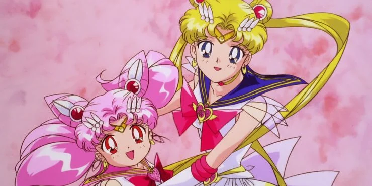

Sailor Moon
Background
Sailor Moon, a 14-year-old underachieving young sailor-suited schoolgirl named Usagi Tsukino meets a magical cat named Luna. Luna give Usagi the ability to transform into her alter ego, Sailor Moon who is tasked with locating the Moon Princess and battling the evil forces of the Dark Kingdom.
How Was Sailor Moon Created?
Creator Naoko Takeuchi's intention wasn't to make a "feminist" manga, she herself said she was inspired to create Sailor Moon based on her personal experiences in junior high. When she first pitched the idea (then titled, Codename is Sailor V) to her editor, he said he wanted her to put the hero in a sailor outfit
Who is Sailor Moon Based on?
Influences from Her Personal Life on Sailor Moon.
Naoko Takeuchi used so much of her own influence for the Sailor Moon franchise. She based Usagi's immediate family off her own. All members of Usagi's family are named members of Takeuchi's family.
Every Sailor Moon Anime in Chronological Order:
- 7. Sailor Moon (1992-1993)
In the first season of the classic anime, Sailor Moon and her four Guardians come into their powers as they deal with their first enermy, the Dark Kingdom.
She wasn't exactly the first "shoujo" the world had ever seen, so what made Usagi so special? It may not have been obvious at the time, but Sailor Moon was different from other magical girl anime in the sense that the main character used her powers to fight evil instead of doing more mundane things like becoming a pop singer.
The animation and plotlines were a tad more crude in those days, but the Sailor Guardians and their interactions made the series an international hit, despite some dubious choices when it came to localization and translations issues.
- 6. Sailor Moon R (1993-1994)
A unique selection in the family of Sailor Moon anime because it has no equivalent in the original manga. The R season had actually surpassed the timelines of the graphic novels at this point; the series is also known as the "Doom Tree Saga" ("Makaiju" in Japanese) in DiC's Engish continuity and was intended as filler until the manga caught up.
At the first thirteen episodes of R, the main story commences: a pink-haired child resembling Sailor Moon searches for the Silver Crystal while evading the nefarious Black Moon Clan.
R also includes a feature film where the Sailor Guardians encounter a dangerous friend from Mamoru's past.
- 5. Sailor Moon S (1994-1995)
Sailor Moon S is deemed the darkest season of all five in the original anime; death, dystopia, and misanthropy were just some of the themes seen during this fun-favorited arc. Here, the villains called the Death Busters hunt for three Talismans that could lead the world's end.
By the third season, the show's very first series director Junichi Satō had helmed the remaineder of R, introduced his unique style that made S so memorable.
Cloverway's English dub is notorious for making changes; the most sizable being the homosexual relationship between new Sailor Guardians, Uranus and Neptune. Rather than being romantically involved, the characters were now cousins. In hindsight, this was a decision made in light of the current social climate and standards of television, but it was homophobic, nonetheless.
Based on a standalone manga side story, the S movie sees an alien wishing to turn Earth into her icy kingdom.
- 4. Sailor Moon SuperS (1995-1996)
The return of Chibi-Usa in this Sailor Moon anime brought the series back to its innocent roots but it wasn't for everyone. The focus on a younger member of the Sailor Guardians also ment the storyline itself took a similar turn to a different demographic. It seemed like an odd choice given the last few seasons, but on the other hand, maybe the fans needed a break from the doom and gloom.
In SuperS, the core Guardians are on break before high school and Chibi-Usa is busy dreaming about a mysterious flying unicorn. Meanwhile, a new enemy called the the Dead Moon infiltrates the city during a solar eclipse and sets up a macabre circus in hopes of finding the elusive being known as Peagasus.
The final '90s movie, SuperS: The Black Dream Hole, features the Sailor Guardians going after Chibi-Usa when she's being abducted by the evil Queen Badiane.

- 3. Sailor Moon Sailor Stars (1996-1997)
If Sailor Moon S was tough to localize due to content, Sailor Moon Sailor Stars was impossible. That's why this series didn't see a worldwide release for several years, and even then it was only in "fansub" form before the complete, uncut season was available on home video.
This was the vintage Sailor Moon season that really pushed the envelope as far as animation, drama, and high stakes, bringing the show back to the more serious, mature path it had taken earlier.
Here, the Queen Nehalennia storyline from SuperS was wrapped up before the actual overarching "Sailor Wars" plot took over. A mysterious enemy has sent her underlings to seize true Star Seeds on Earth, but to what end?
- 2. Sailor Moon Crystal (2014)
Sailor Moon Crystal is written and designed as a more faithful adaptation of the original manga rather than a remake of the previous anime. At the same time, it was released twenty years after the original, and on Sailor Moon's birthday on June 30th.
So far, Crystal has covered the first three arcs of the manga: Dark Kingdom, Black Moon, and Infinity. Because they are closely based on the source material, this anime has far less filler and is more plot-driven.
- Sailor Moon Eternal (2021)
Rather than continuing Crystal with a televised version of the manga's fourth arc, Dream, Toei is adapting the story into two feature-length films collectively called Sailor Moon Eternal. As in the Manga, the Sailor Guardians are up against the Dead Moon. However, because it is modeled after the manga, the plot developments will be very different from what was seen in SuperS.
As of now, it's unclear if Eternal will infact house the final manga arc, Star.
Below you'll find a brief timeline video: